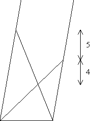

Two players bet on the total roll of two standard dice. Player A bets that a 12 will be rolled first. Player B bets that two consecutive 7s will be rolled first. The players keep rolling until one player wins. What is the probability that A will win?
Answer - Solution
You are given n > 0 of each of the standard denomination US coins: 1¢, 5¢, 10¢, 25¢, 50¢, $1. What is the smallest n such that it is impossible to select n coins that make exactly a dollar?
Answer - Solution
Two players play the following game with a fair coin. Player 1 chooses (and announces) a triplet (HHH, HHT, HTH, HTT, THH, THT, TTH, or TTT) that might result from three successive tosses of the coin. Player 2 then chooses a different triplet. The players toss the coin until one of the two named triplets appears. The triplets may appear in any three consecutive tosses: (1st,2nd,3rd), (2nd,3rd,4th), and so on. The winner is the player whose triplet appears first.
Answer - Solution
Two ladders are placed cross-wise in an alley to form a lopsided X-shape. The walls of the alley are not quite vertical, but are parallel to each other. The ground is flat and horizontal. The bottom of each ladder is placed against the opposite wall. The top of the longer ladder touches the alley wall 5 feet vertically higher than the top of the shorter ladder touches the opposite wall, which in turn is 4 feet vertically higher than the intersection of the two ladders. How high vertically above the ground is that intersection?
Hint - Answer - Solution
Two players take turns choosing one number at a time (without replacement) from the set {-4, -3, -2, -1, 0, 1, 2, 3, 4}. The first player to obtain three numbers (out of three, four, or five) which sum to 0 wins.
Does either player have a forced win?
Hint - Answer - Solution
On the first day of a new job, a colleague invites you around for a barbecue. As the two of you arrive at his home, a young boy throws open the door to welcome his father. “My other two kids will be home soon!” remarks your colleague.
Waiting in the kitchen while your colleague gets some drinks from the basement, you notice a letter from the principal of the local school tacked to the noticeboard. “Dear Parents,” it begins, “This is the time of year when I write to all parents, such as yourselves, who have a girl or girls in the school, asking you to volunteer your time to help the girls' soccer team.” “Hmmm,” you think to yourself, “clearly they have at least one of each!”
This, of course, leaves two possibilities: two boys and a girl, or two girls and a boy. Are these two possibilities equally likely, or is one more likely than the other?
Note: This is not a trick puzzle. You should assume all things that it seems you're meant to assume, and not assume things that you aren't told to assume. If things can easily be imagined in either of two ways, you should assume that they are equally likely. For example, you may be able to imagine a reason that a colleague with two boys and a girl would be more likely to have invited you to dinner than one with two girls and a boy. If so, this would affect the probabilities of the two possibilities. But if your imagination is that good, you can probably imagine the opposite as well. You should assume that any such extra information not mentioned in the story is not available.
Answer - Solution
Player A has n+1 coins, while player B has n coins. Both players throw all of their coins simultaneously and observe the number that come up heads. Assuming all the coins are fair, what is the probability that A obtains more heads than B?
Hint - Answer - Solution
Two information theoreticians, A and B, perform a trick with a shuffled deck of cards, jokers removed. A asks a member of the audience to select five cards at random from the deck. The audience member passes the five cards to A, who examines them, and hands one back. A then arranges the remaining four cards in some way and places them face down, in a neat pile.
B, who has not witnessed these proceedings, then enters the room, looks at the four cards, and determines the missing fifth card, held by the audience member. How is this trick done?
Note: The only communication between A and B is via the arrangement of the four cards. There is no encoded speech or hand signals or ESP, no bent or marked cards, no clue in the orientation of the pile of four cards...
Hint 1 - Hint 2 - Solution
The two information theoreticians from puzzle 19 now attempt an even more ambitious trick. It is in fact the same trick, but performed this time with a pack of 124 cards! How does this trick work?
(Note: 124 cards is the maximum number of cards for which this trick can be performed. The cards may be thought of as four suits with 31 cards each, or perhaps as days from a calendar, using the months January, March, May, and July. Or they may be thought of as a double deck, with 20 extra cards from a third deck thrown in, bearing in mind that the magicians must be able to tell, perhaps from the design on the back of the cards, from which pack a given card is taken. Or they may simply be numbered from 1 to 124.)
Solution
| Nick Hobson nickh@qbyte.org |